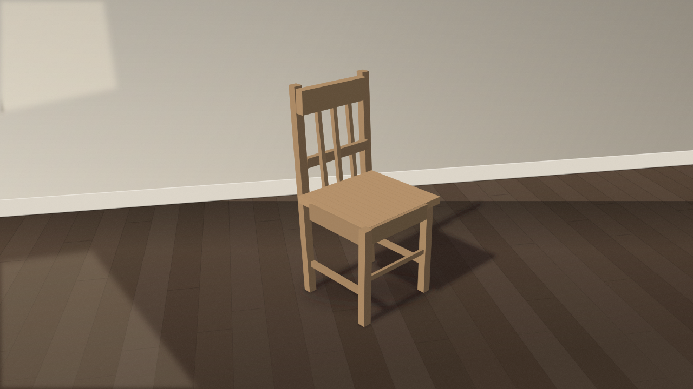

- Video ID
- chair-0000001
- Frames
- 0 dropped of 1
- Current / Optimal Res
- Chair / Chair
- Connection Speed
- 0.0 kbps
- Uptime
- —
- Peak Viewers
- —
- Codecs
- furniture.1 / none
LIVE
The Chair
An unremarkable room
SIGNAL LOST — RECONNECTING
BREAKING
Are you still watching?
The stream has detected no signs of life. Neither have we.
LIVE
0
DFS
On nowSince 2024. No end time listed.
The Chair
Continuing coverage of a wooden chair in a spare room. Nobody is expected to sit in it. Viewers joining late have not missed anything.
You’re watching from —, and have been for 00:00:00. 0 people are talking about this.
Please do not adjust your set.